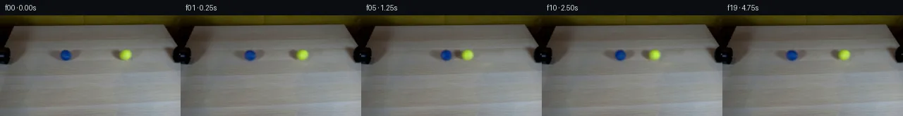

![首帧]()

Round 00
2026-11-04T22:14:54.670483+00:00像素候选变化代码 +345/−0inspection 更新
pixels ed7f968ebeed149c · code 4f6ff30b7fc0313b
查看本轮 generate.py 真实 diff
--- previous/generate.py
+++ current/generate.py
@@ -0,0 +1,345 @@
+"""PixelWorld-Text: local RGB reconstruction and analytic rolling collision.
+
+No image-viewing tools, external models, assets, render engines or network calls.
+Only first_frame.png and prompt.txt supply scene content. artifact_io only saves it.
+"""
+from pathlib import Path
+import base64
+import json
+import re
+
+import cv2
+import numpy as np
+from PIL import Image, ImageDraw
+from scipy.ndimage import gaussian_filter, map_coordinates
+from scipy.optimize import least_squares
+from scipy.special import ndtr
+
+from artifact_io import save
+
+ROOT = Path(__file__).resolve().parent
+TEMP = ROOT / '.tmp'
+TEMP.mkdir(exist_ok=True)
+SOURCE = np.asarray(Image.open(ROOT / 'first_frame.png').convert('RGB')).copy()
+H, W = SOURCE.shape[:2]
+YY, XX = np.mgrid[:H, :W].astype(float)
+
+
+def smoothstep(a, b, x):
+ z = np.clip((x-a)/(b-a), 0.0, 1.0)
+ return z*z*(3.0-2.0*z)
+
+
+OBJECTS = [
+ dict(name='blue', cx=93.2, cy=56.9, repair=(91.0, 57.0, 29.0, 13.0),
+ fit_start=[93.0, 56.9, 7.8, 7.4, .65], hue=[9., 54., 123.]),
+ dict(name='yellow', cx=177.6, cy=56.2, repair=(175.0, 56.3, 22.0, 12.5),
+ fit_start=[177.6, 56.1, 8.4, 7.5, .65], hue=[157., 194., 61.]),
+]
+
+
+def recover_table():
+ """Local row interpolation preserves the photographed horizontal grain.
+
+ A donor high-frequency grain residual comes from the same source image.
+ No global relighting or editing of the stationary pipes/background occurs.
+ """
+ original = SOURCE.astype(float)
+ background = original.copy()
+ support = np.zeros((H, W), float)
+ for obj in OBJECTS:
+ cx, cy, rx, ry = obj['repair']
+ distance = np.sqrt(((XX-cx)/rx)**2 + ((YY-cy)/ry)**2)
+ feather = 1.0-smoothstep(.82, 1.0, distance)
+ support = np.maximum(support, feather)
+ filled = original.copy()
+ for y in range(max(0, int(cy-ry)-1), min(H, int(cy+ry)+2)):
+ span = rx*np.sqrt(max(0.0, 1.0-((y-cy)/ry)**2))
+ lo, hi = int(np.floor(cx-span)), int(np.ceil(cx+span))
+ if hi-lo < 3:
+ continue
+ # Row medians remove pixel noise at the two interpolation boundaries.
+ left = np.median(original[y, lo-4:lo+1], axis=0)
+ right = np.median(original[y, hi:hi+5], axis=0)
+ u = np.arange(lo, hi+1, dtype=float)
+ linear = left[None, :] + ((u-lo)/(hi-lo))[:, None]*(right-left)[None, :]
+ # Source-derived fine grain; donor is clear wood, not either ball.
+ donor_x = 119 + (np.arange(len(u))+y*3) % 34
+ row = original[y, 118:154]
+ residual = row-gaussian_filter(row, sigma=(1.15, 0))
+ grain = residual[donor_x-118]*.6
+ filled[y, lo:hi+1] = linear+grain
+ background = background*(1-feather[..., None])+filled*feather[..., None]
+ return background, support
+
+
+BACKGROUND, REPAIR_SUPPORT = recover_table()
+
+
+def extract_shadow(obj):
+ """Separate photographed soft shadow from the saturated ball silhouette."""
+ cx, cy, rx, ry = obj['repair']
+ local = np.sqrt(((XX-cx)/rx)**2+((YY-cy)/ry)**2)
+ support = 1-smoothstep(.79, 1.0, local)
+ ratio = (SOURCE.astype(float)+2)/(BACKGROUND+2)
+ ball_cut = (((XX-obj['cx'])/10.8)**2 + ((YY-obj['cy'])/10.3)**2 < 1)
+ # Float-channel inpainting is a local pixel operation; only the hidden
+ # shadow beneath the ball is estimated. Exterior shadow pixels are retained.
… diff truncated; 258 more lines …